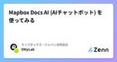

マップボックス・ジャパン合同会社のフィード
https://zenn.dev/p/mapbox_japan
マップボックス・ジャパン合同会社は、地図情報サービスの開発プラットフォームにおけるリーディングカンパニーです。ユーザー企業や代理店企業との共創により、地図を活用した新たな生活体験や業務改善ソリューションを生み出すことで、社会と暮らしの進化を支えています。
フィード
Mapbox Newsletter WEEKLY TIPSの解説 -「ホバー時にポップアップを表示」
マップボックス・ジャパン合同会社のフィード
はじめにこの記事は、先日配信されたMapbox NewsletterのWEEKLY TIPSで紹介されていた「ホバー時にポップアップを表示」についての解説です。このサンプルではPopupおよびマウスイベントの使い方について例示しています。また、Newsletterの購読はこちらからお申し込みいただけます。以下が本サンプルのデモです。 コードを確認まずExamplesのコードを見に行きましょう。日本語サイト英語サイト基本的に同じコードですが、英語版はスタイルがMapbox Streets v12にアップグレードされているのでこちらを使用します。Mapbox Str...
6時間前
Mapbox Newsletter WEEKLY TIPSの解説 -「ズーム・レベルに応じて建物の色を変更」
マップボックス・ジャパン合同会社のフィード
はじめにこの記事は、先日配信されたMapbox NewsletterのWEEKLY TIPSで紹介されていた「ズーム・レベルに応じて建物の色を変更」についての解説です。このサンプルではMap#setPaintPropertyとExpressionsの使い方について例示しています。また、Newsletterの購読はこちらからお申し込みいただけます。以下が本サンプルのデモです。 コードを確認まずExamplesのコードを見に行きましょう。日本語サイト英語サイト基本的に同じコードですが、英語版はスタイルがMapbox Streets v12にアップグレードされているの...
8日前

Mapbox Docs AI (AIチャットボット) を使ってみる 1
1
マップボックス・ジャパン合同会社のフィード
はじめにもうすでに利用された方もいらっしゃるかもしれませんが、Mapbox, Inc.のドキュメントサイトにはAIチャットボットがあります。右下の「Ask AI」をクリックすると以下のようなチャット画面が表示されます。このAIチャットボットはRAG (Retrieval Augmentented Generation)を用いているため。ドキュメントサイトの内容に関する質問については正確な回答が期待できます。また、日本語にも対応しています。そこで、この記事ではいくつか技術的な質問をしてどれぐらい使えるAIか試してみます。 試してみるそれでは実際にいくつかの質問を試してみ...
10日前
Mapbox Search JS を触ってみる (SearchBox/Core + Minimap編)
マップボックス・ジャパン合同会社のフィード
はじめにこの記事はMapbox Search JS を触ってみる (SearchBox/React編)の続きで、Search JSのSearchBox/Coreの使い方を見ていきます。Search Box - Search SessionのSearchSessionのExampleを参考にしつつ、使い方を見ていきます。以下が本サンプルのデモです。テキストボックスに地名や住所を入れてSuggestボタンをクリックします。次にSelectメニューに追加された候補から一つ選択することで地図が表示され、その場所がマーカーで示されます。 Search Box Core と Minim...
12日前

Mapbox Search JS を触ってみる (SearchBox/React編)
マップボックス・ジャパン合同会社のフィード
はじめにこの記事はMapbox Search JS を触ってみる (SearchBox/Web編)の続きで、Search JSのSearchBox/Reactの使い方を見ていきます。Search Box - React QuickstartのIntegration with a Mapbox GL JS Mapを参考にしつつ、Add Search Box for Japanと同じものを作成します。以下が本サンプルのデモです。SafariやFirefoxを使用されている方はデモが実行されない可能性があります。Chromeで表示するか、 https://stackblitz.com/...
19日前
Mapbox Newsletter WEEKLY TIPSの解説 -「陰影処理を追加」
マップボックス・ジャパン合同会社のフィード
はじめにこの記事は、先日配信されたMapbox NewsletterのWEEKLY TIPSで紹介されていた「陰影処理を追加」についての解説です。このサンプルではhillshadeレイヤーの使い方について例示しています。また、Newsletterの購読はこちらからお申し込みいただけます。以下が本サンプルのデモです。 コードを確認まずExamplesのコードを見に行きましょう。日本語サイト英語サイト基本的に同じコードですが、英語版はMapbox Light v11スタイルを使用しているのでこちらを参照します。また、英語版はMapbox GL JS v3が使用されて...
25日前
Mapbox Search JS を触ってみる (SearchBox/Web編)
マップボックス・ジャパン合同会社のフィード
はじめに2024年春リリースでSearch SDKsの発表がありました。その中で現在ベータ版で公開中のMapbox Search JSの使い方についてみていきます。 Mapbox Search JSとはMapbox Search JSはMapboxのSearchサービスをJavaScript環境で使用するためのライブラリです。サービスとしてはAddress Autofill、Search Box、Geocodingの3種類に対応しています。Autofill: Autofill API (日本未対応) を使用して不完全な住所情報から完全な住所を得る機能Search Box...
25日前
Mapbox Newsletter WEEKLY TIPSの解説 -「画像を追加」
マップボックス・ジャパン合同会社のフィード
はじめにこの記事は、先日配信されたMapbox NewsletterのWEEKLY TIPSで紹介されていた「画像を追加」についての解説です。このサンプルではimageソースの使い方を例示しています。また、Newsletterの購読はこちらからお申し込みいただけます。以下が本サンプルのデモです。 コードを確認まずExamplesのコードを見に行きましょう。日本語サイト英語サイト基本的に同じコードですが、英語版はスタイルがMapbox Dark v11にアップグレードされているのでこちらを使用します。Mapbox Dark v10ではデフォルトのプロジェクションが...
2ヶ月前
Mapbox Newsletter WEEKLY TIPSの解説 -「Add a 3D model with threebox」
マップボックス・ジャパン合同会社のフィード
はじめにこの記事は、先日配信されたMapbox NewsletterのWEEKLY TIPSで紹介されていた「Add a 3D model with threebox」についての解説です。このサンプルではThreeboxの使い方を例示しています。また、Newsletterの購読はこちらからお申し込みいただけます。以下が本サンプルのデモです。 ThreeboxとはこれまでのWEEKLY TIPSではカスタムレイヤーを用いる方法を見てきました。Mapbox Newsletter WEEKLY TIPSの解説 -「カスタムスタイルレイヤーを追加」ではWebGLを直接コントロール...
3ヶ月前
Mapbox Newsletter WEEKLY TIPSの解説 -「マップナビゲーションコントロールの表示」
マップボックス・ジャパン合同会社のフィード
はじめにこの記事は、先日配信されたMapbox NewsletterのWEEKLY TIPSで紹介されていた「マップナビゲーションコントロールの表示」についての解説です。このサンプルではNavigationControlの使い方を例示しています。また、Newsletterの購読はこちらからお申し込みいただけます。以下が本サンプルのデモです。右上に表示されている+/-ボタン等がナビゲーションです。 コードを確認まずExamplesのコードを見に行きましょう。日本語サイト英語サイト基本的に同じコードですが、英語版はスタイルがMapbox Streets v12にアッ...
3ヶ月前
Mapbox Newsletter WEEKLY TIPSの解説 -「3Dモデルを追加」
マップボックス・ジャパン合同会社のフィード
はじめにこの記事は、先日配信されたMapbox NewsletterのWEEKLY TIPSで紹介されていた「3Dモデルを追加」についての解説です。このサンプルではThree.jsを使ってCustomLayerInterfaceを構成する方法を紹介しています。また、Newsletterの購読はこちらからお申し込みいただけます。以下が本サンプルのデモです。 Three.jsとはThree.jsはWebGLベースの3Dライブラリです。「カスタムスタイルレイヤーを追加」ではWebGLを直接使ってカスタムレイヤーを作成していましたが、一つの三角形を描くのにもかなりの量のコードが必...
3ヶ月前
Mapbox Newsletter WEEKLY TIPSの解説 -「カスタムスタイルレイヤーを追加」
マップボックス・ジャパン合同会社のフィード
はじめにこの記事は、先日配信されたMapbox NewsletterのWEEKLY TIPSで紹介されていた「カスタムスタイルレイヤーを追加」についての解説です。このサンプルではCustomLayerInterfaceの使い方を紹介しています。また、Newsletterの購読はこちらからお申し込みいただけます。以下が本サンプルのデモです。 CustomLayerInterfaceとは地理空間データを表示する際、通常はMapbox GL JSで定義されているレイヤー（Symbolレイヤー、Circleレイヤー等）を使用します。それに加えて、Mapbox GL JSではユーザ...
4ヶ月前
Mapbox Newsletter WEEKLY TIPSの解説 -「ジオコーダの結果後にポイントを設定」
マップボックス・ジャパン合同会社のフィード
はじめにこの記事は、先日配信されたMapbox NewsletterのWEEKLY TIPSで紹介されていた「ジオコーダの結果後にポイントを設定」についての解説です。このサンプルではGeocoderプラグインの使い方を紹介しています。また、Newsletterの購読はこちらからお申し込みいただけます。以下が本サンプルのデモです。テキストボックスに地名等を入力して検索します。候補から一つ選択すると、その場所にピンがセットされカメラが移動します。 コードを確認まずExamplesのコードを見に行きましょう。日本語サイト英語サイト基本的に同じコードですが、英語版はスタ...
4ヶ月前
Mapbox Newsletter WEEKLY TIPSの解説 -「距離を測定」
マップボックス・ジャパン合同会社のフィード
はじめにこの記事は、先日配信されたMapbox NewsletterのWEEKLY TIPSで紹介されていた「距離を測定」についての解説です。このサンプルはturf.lineDistanceの使い方について例示しています。また、Newsletterの購読はこちらからお申し込みいただけます。以下が本サンプルのデモです。地図上をクリックしていくと点が打たれ、点と点の間に線分が描画されます。また、点と点の間の距離が表示されます。点をクリックするとその点を消せます。 TurfTurfは地理情報の分析等を行うJavaScriptのライブラリです。Mapbox GL JSと組み合わせ...
5ヶ月前
日本のPOI検索でRoutable Pointsがサポートされました！
マップボックス・ジャパン合同会社のフィード
はじめにSearch Box APIにおける日本のPOI検索で、Routable Pointsがサポートされました。この記事では、Routable Pointsの使い方等について解説します。 Search Box APIとはSearch Box APIとはMapboxのSearchサービスが提供するAPIの一つです。ユーザー入力に応じて次々と候補を表示するような、インタラクティブな検索に強みがあるのが特徴です。インタラクティブな検索を実現するため、以下の2つのエンドポイントが使用されます。/suggest: ユーザの入力した住所やPOI名に部分一致する結果一覧を返します...
5ヶ月前
Mapbox Newsletter WEEKLY TIPSの解説 -「ゲーム感覚でマップを操作」
マップボックス・ジャパン合同会社のフィード
はじめにこの記事は、先日配信されたMapbox NewsletterのWEEKLY TIPSで紹介されていた「ゲーム感覚でマップを操作」についての解説です。このサンプルはデフォルトとは異なるキーボード操作を実装する方法について例示しています。また、Newsletterの購読はこちらからお申し込みいただけます。以下が本サンプルのデモです。キーボードの矢印キーで操作します。上下矢印で前後の移動、左右矢印で地図の回転です。 コードを確認まずExamplesのコードを見に行きましょう。日本語サイト英語サイト基本的に同じコードですが、英語版はスタイルがMapbox Dar...
5ヶ月前
「Software Design 2024年02月号 位置情報エンジニアリングのすすめ 第7回」をMapbox GL JSで実装してみる
マップボックス・ジャパン合同会社のフィード
はじめに現在、Software Designで連載中の「位置情報エンジニアリングのすすめ」を毎月楽しく拝読しております。第7回「防災マップの作成② 地図の3D表現と土砂災害警戒区域の可視化」ではMapLibre GL JSを用いて地理情報を表示していました。今回の紙面の内容もMapbox GL JSで実装可能なので、試してみようと思います。 建物ポリゴンの3D表示紙面ではソースとして国土地理院Vector、レイヤーとしてfill-extrusionを用いて建物を表示していました。Mapbox GL JSでも同じ手法で表示が可能です。ただし、Mapboxの場合はMapbox S...
5ヶ月前
Mapbox Newsletter WEEKLY TIPSの解説 -「一連の場所にジャンプ」
マップボックス・ジャパン合同会社のフィード
はじめにこの記事は、先日配信されたMapbox NewsletterのWEEKLY TIPSで紹介されていた「一連の場所にジャンプ」についての解説です。このサンプルはMap#jumpToの使い方に関して例示しています。また、Newsletterの購読はこちらからお申し込みいただけます。以下が本サンプルのデモです。 コードを確認まずExamplesのコードを見に行きましょう。日本語サイト英語サイト基本的に同じコードですが、英語版はスタイルがMapbox Streets v12にアップグレードされているのでこちらを使用します。Mapbox Streets v11では...
5ヶ月前
OCPIプロトコルとは？
マップボックス・ジャパン合同会社のフィード
OCPIプロトコルとはOpen Charge Point Interfaceの略で電気自動車(以下EVと略す)と充電インフラとのやり取りを定義した仕様です。仕様書はGithubにホストされているので誰でも読め、間違い等があったりしたらPRを送ることができます。https://github.com/ocpi/ocpi!2023年11月2日時点で最新のOCPI v2.2.1の仕様について解説します OCPIが生まれた背景EVインフラが世界中に急速に広まっています。米国ではセブンイレブンが7Chargeという充電施設を運営しています。今後も様々な企業が参入し、EVインフラを提供し...
6ヶ月前
maplibre-gl-opacityをMapbox GL JSで使ってみる
マップボックス・ジャパン合同会社のフィード
はじめに現在、Software Designで連載中の「位置情報エンジニアリングのすすめ」を毎月楽しく拝読しております。第6回「防災マップの作成① 浸水想定区域と避難所を可視化する」ではMapLibre GL JSを用いて地理情報を表示していました。記事にも記載されている通り、MapLibre GL JSはMapbox GL JSからフォークされた地図ライブラリなので、使い方は非常に似通っています。そこで、ここでは紙面で紹介されていたMapLibre GL JS用のプラグインであるmaplibre-gl-opacityをMapbox GL JSで使ってみようと思います。 map...
6ヶ月前